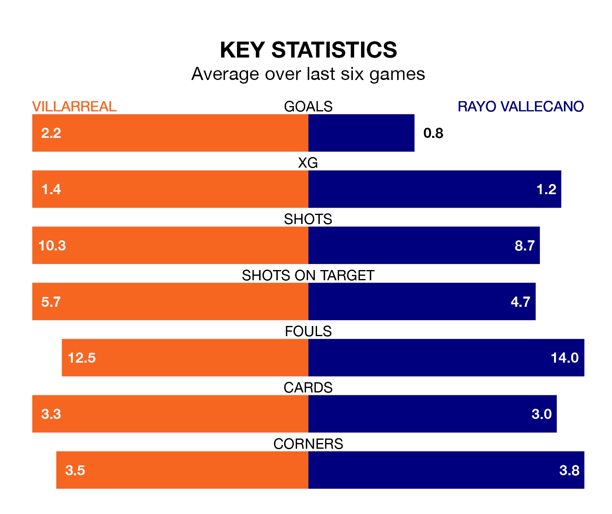

Villarreal host Rayo Vallecano on Sunday at Estadio de la Cerámica in La Liga.
In their last league match, on April 21, Villarreal beat Almería 2-1 away, with goals from Alexander Sørloth and Ilias Akhomach.
Rayo also won, 2-1 at home against CA Osasuna on April 20, with Isi Palazón and Pep Chavarría on the scoresheet.
With Stole Dimitrievski between the sticks, Rayo can rely on one of the league's safest pair of hands. He has kept 12 clean sheets in his 32 appearances this season, and only one other 'keeper – Athletic Club Bilbao's Unai Simón – has been able to prevent the opposition scoring on more occasions in La Liga.
In Villarreal's net, Filip Jörgensen has four clean sheets in 31 games. He has conceded a goal every 54 minutes, 70% more often than the 90 minutes between goals for Dimitrievski.
With 27 goals in 32 games so far this season, the away team are the league's third-lowest scorers with 0.8 goals per game. But they are conceding fewer than average too, letting in 39 goals at a rate of 1.2 per game.
The hosts, meanwhile, are above average scorers, with 1.6 goals per game, compared to a league average of 1.3. They have conceded 1.7 goals per game.
In the last 10 years, Villarreal and Rayo have played each other on 13 occasions. Villarreal won seven of them, Rayo four, and they drew twice.
On average, Villarreal scored 2.1 goals and Rayo 1.2 in those matches.
Their last meeting was on September 24, when they played out a 1-1 draw.
Rayo are 15th in the table after 32 games, of which they have won seven and drawn 13, earning 34 points.
Villarreal are six places ahead of Rayo in ninth, with 11 wins and nine draws putting them on 42 points.
Villarreal are in good form in La Liga, with four wins and a draw from their last six games.
With two wins and three draws over that period, the visitors' form is worse – they have taken nine points from 18, compared to the home side's 13.
Updated: 07:59 (UTC), 26/04/24